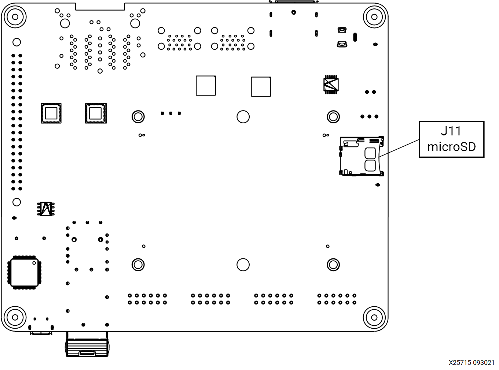
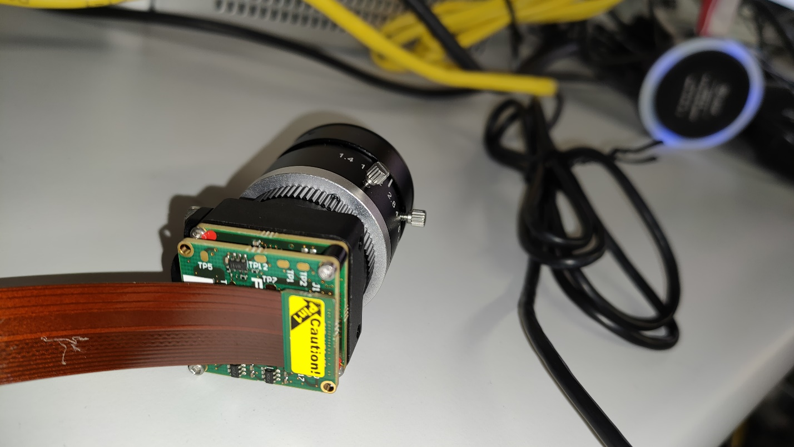
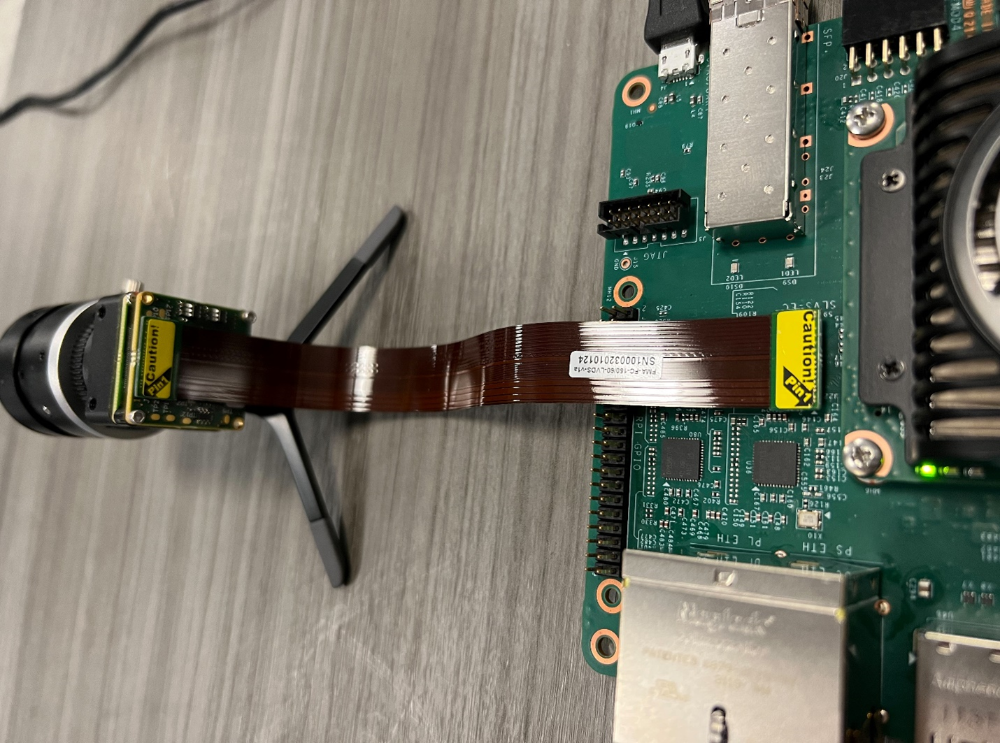
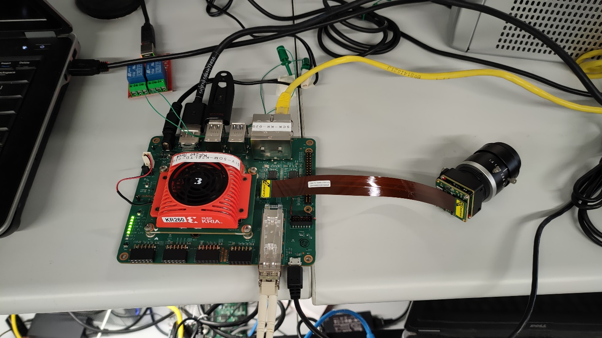
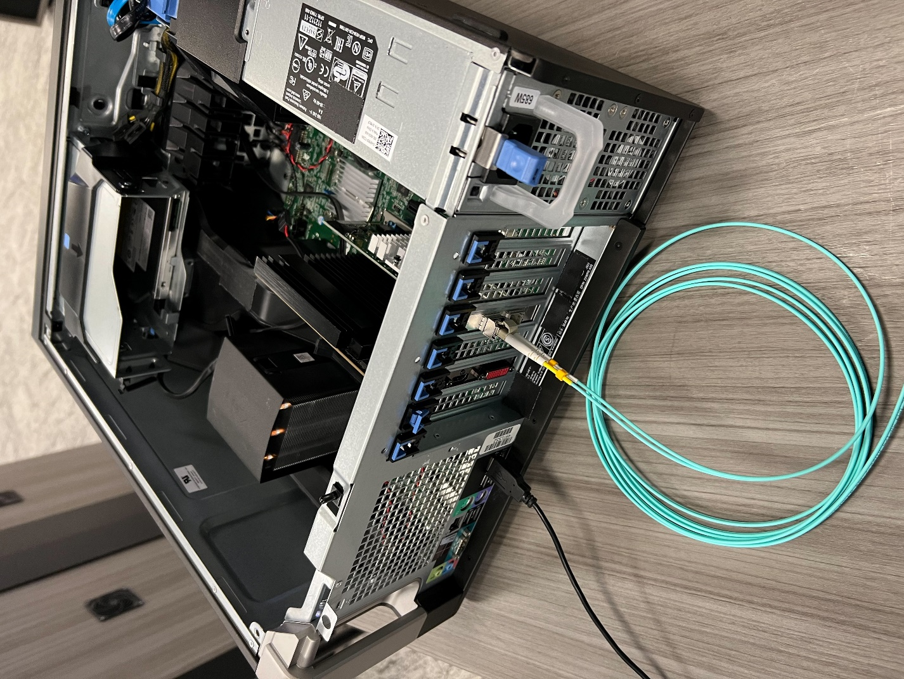

Kria™ KR260 Robotics Starter Kit |
Machine Vision Camera Tutorial |
Machine Vision Application Deployment¶
Introduction to the Test Environment¶
This document shows how to set up the board and run the MV-Defect Detect and 10GigE applications.
Hardware Requirements¶
KR260 Robotics Starter Kit
KR260 Power Supply & Adapter (Included with KR260 Robotics Starter Kit)
Cat 5e Ethernet Cable (Included with KR260 Robotics Starter Kit)
USB-A to micro-B Cable (Included with KR260 Robotics Starter Kit)
16GB MicroSD Cards (Included with KR260 Robotics Starter Kit)
2-Windows or Ubuntu PC, one for capture the UART/console logs from KR260 board, and one to act as host PC
a. Windows-10 or latest
b. Ubuntu-16.04 or latest
Fiber Optic cable
Sony IMX547 Monochrome Camera sensor Module
10G NIC Card
10G SFP+ Transceiver
Some reference for 10G NIC Card, fiber optic cable, 10G SFP+ Transceiver are listed below:
10G Network cards:
X520-10G-1S (not tested yet at S2I)
E10G42BTDA X520-da2 (might need Intel coded SFP+ modules)
Fiber Cable:
Two SFP+ Modules:
Setting Up the Live Source¶
When setting up the SOM Board for the live camera source capturing mango image displayed on a monitor, adhere to the following guidelines:
Keep the IMX547 Camera module firmly held in a static position.
IMX547 Camera module should be directly opposite to the monitor (180 deg).
In the test environment, keep the IMX547 Camera Module at an appropriate distance (35 cm) from the monitor.
According to the model of the monitor, set brightness and contrast to 45 and 17 respectively.
Ensure that the room is closed. To get more clear preview image, add an artificial light source against to monitor.
To avoid over exposure of light, do NOT place the monitor opposite to open door or window.
Ensure that live source should be able to capture the mango completely.
The camera should be focused ONLY on the mango image that was displayed.
In the test environment, the light intensity is to be ~1280 LUX.
Note: If the preview image is not satisfactory, adjust the above mentioned parameters.
Setting Up the Test Environment¶
Note: Ensure that the Gstreamer packages installed on Linux PC. If Linux distribution is on Ubuntu, make sure its version is at least 16.04.
Download all the sample mango images from the Cofilab site to the Linux PC.
Note: If the file fails to download, copy the link and open in a new browser tab to download the file.
As the downloaded images are in JPG format, convert them to GRAY8 (Y8) format using the following steps.
Unzip the downloaded rar file.
In the Linux PC, go to
DB_mango.Copy and save the following script as convert_jpeg_y8.sh:
for file in ./*; do f=$(echo "${file##*/}"); filename=$(echo $f| cut -d'.' -f 1); #file has extension, it return only filename echo $filename gst-launch-1.0 filesrc location=$file ! jpegdec ! videoconvert ! videoscale ! video/x-raw, width=1920, height=1080, format=GRAY8 ! filesink location=$filename.y8 done cat Mango_*.y8 > input_video.y8
Make the script executable:
chmod +x convert_jpeg_y8.shRun the script
convert_jpeg_y8.shas follows:./convert_jpeg_y8.sh >& file.txtOnce the above command is completed, the script produces
input_video.y8as input to the MV-Defect-Detect application.Copy
input_video.y8from the Linux PC to the SOM board. if copied to SD card, it can be found in/boot/firmware/input_video.y8. In order for containers to access the file, copy it to/tmp/and containers can then also access it from its /tmp/ folder. then copy it to/home/directory in container.NOTE: Delete all files except
input_video.y8.
The MV-Defect-Detect application’s design- takes, processes, and displays images on to the monitor.
See Known Issues and Limitations with the MV-Defect-Detect application.
SOM Board setup¶
Refer to KR260 Board & Interface layout below for connector reference numbers:


Note: Skip Step 1 (Flashing the SD Card), if the SD Card already flashed with the KR260 Robotics Starter Kit Image.
Flashing the SD Card
Follow the instruction from the Kria KR260 getting started page to obtain Ubuntu image and flash SD card.
Insert the SD card into slot at J11.
UART/JTAG interface:
a. For interacting and seeing boot-time information, connect a USB debugger to the J4.
b. Open a serial terminal program (teraterm, putty etc) on UART monitoring laptop and connect to COM port corresponding to the board.
c. Com Parameters: Speed: 115200, Data bits: 8, Stop bits: 1, Parity: None, Flow control: Xon/Xoff
Ensure that the board is powered off. Connect IMX547 Monochrome sensor module to J22 in KR260 using flex cable refer below figure:


Keep the KR260 board and sensor module firmly held in a static position.
Connect Ethernet cable from PS ethernet ‘J10C’ to local network with DHCP enabled to install packages.
Connect the fiber optic cable to SFP+ connector in KR260 board, other end to host machine (Windows/Ubuntu) NIC card.
Power supply: 12V 3A adapter to be plugged into the DC jack at J12.
The KR260 board connection should be as shown in the below figure:

Host Machine Setup¶
Check the available network interfaces before inserting the 10G NIC card using
ifconfig -afor ubuntu hostipconfig /allfor windows host
Install the 10Gb PCIe NIC Network Card in the PCIe slot as shown in figure below,

Connect the fiber optic cable one end to NIC card in host machine and the other end to KR260 board SFP+ connector.
The newly inserted NIC card shows the new interface in the host machine. User may run the same command to verify that:
ifconfig -afor ubuntu hostipconfig /allfor windows host
Note: On windows host, ensure that network related drivers are installed from the link, before running Host Sphinx application.
Note: Ensure 10GigE interface is enabled on Host PC before loading MV-Camera application firmware.
Boot the Linux Image¶
Power on the board, and boot Linux image:
NOTE: Only perform this step if Starter kit is booting for the first time. Otherwise, log in with the ubuntu username and the password that was previously set.
The Linux image boots into the following login prompt:
kria login:
Use the ubuntu user for login. If login password expires, it prompted to set a new password when executing sudo commands.
kria login: ubuntu
Password: ubuntu
ubuntu@kria:\~\$ sudo touch file.txt
\[sudo\] password for ubuntu:
sudo: Account or password is expired, reset your password and tryagain
Changing password for ubuntu.
Current password:
New password:
Retype new password:
The ubuntu user does not have root privileges. Most commands used in subsequent tutorials must be run using sudo, and it may be prompted to enter your password.
Note: For security, by default, the root user is disabled. If user want to login as root user, perform the following steps. Use the ubuntu user’s password on the first password prompt, then set a new password for the root user. User can now login as root user using the newly set root user password.
ubuntu@kria:\~\$ sudo -i sudo\] password for ubuntu: root@kria:\~#
Note: After every reboot, ensure the device date and time must be inline with current local date and time. Use the below command accordingly.
sudo date --set "11 January 2023 16:47:00"
Installing the Application packages¶
Install the latest application packages.
Add Xilinx apps repository to download the apps:
sudo add-apt-repository ppa:xilinx-appsCheck the package feed for new updates.
sudo apt updatesudo apt upgradeConfirm with “Y” when prompted to install new or updated packages.
Reboot the board using below command and login with ubuntu username and password.
sudo rebootGet the list of available packages in the feed:
sudo xmutil getpkgsInstall the application.
sudo apt install xlnx-firmware-kr260-mv-cameraNote : Installing firmware binaries may cause dfx-mgr to crash and a restart is needed, which is listed in the Known issues and Limitations section. Once this is fixed an newer updates are available for dfx-manager, restart may not be needed.
Docker based application preparation¶
Install docker
sudo apt install docker.io
Pull the latest docker image for mv-defect-detect using the below command.
sudo docker pull xilinx/mv-defect-detect:2022.1
The storage volume on the SD card can be limited with multiple dockers. If there are space issues, use the following command to remove the existing container.
sudo docker rmi --force $INSTALLED_DOCKER_IMAGEFind the images installed with the below command:
sudo docker images
Firmware Loading¶
The MV-Camera application firmware consists of bitstream (bit.bin) and device tree overlay (dtbo). The MV-Camera firmware is loaded dynamically on user request once ubuntu system is fully booted. Use the xmutil utility to list and load the firmware.
Note: xmutil utility runs only in Ubuntu.
Dynamically load the application firmware:¶
Disable the desktop environment:
sudo xmutil desktop_disable
Note: Executing “xmutil desktop_disable” causes the desktop on the monitor to be disabled. Please use any serial terminal to continue issuing Linux commands via port J4 and not rely completely on the desktop environment.
After running the application, the desktop environment can be enabled again with:
sudo xmutil desktop_enable
After installing the FW, execute xmutil listapps to verify that it is captured under the listapps function, and to have dfx-mgrd re-scan and register all accelerators in the FW directory tree.
sudo xmutil listapps
To list the available accelerator applications, run:
sudo xmutil listapps
Note: The Active_Slot column shows the application firmware that is currently loaded in the system. The value ‘-1’ indicates that the firmware is not loaded, while the value of ‘0’ indicates that the firmware is loaded. By default, only the k26-starter-kits firmware is loaded.
To load the MV-Camera application firmware, unload the existing firmware and then load the MV-Camera application firmware:
sudo xmutil unloadapp
sudo xmutil loadapp kr260-mv-camera
Launching the Docker¶
Launch the docker using the below command. The firmware must be loaded before launching the docker container.
sudo docker run \
--env="DISPLAY" \
--env="XDG_SESSION_TYPE" \
--net=host \
--privileged \
--volume /tmp:/tmp \
--volume="$HOME/.Xauthority:/root/.Xauthority:rw" \
-v /dev:/dev \
-v /sys:/sys \
-v /etc/vart.conf:/etc/vart.conf \
-v /lib/firmware/xilinx:/lib/firmware/xilinx \
-v /run:/run \
-h "xlnx-docker" \
-it xilinx/mv-defect-detect:2022.1 bash
It launches the mv-defect-detect docker image container
root@xlnx-docker/#
Running the 10GigE Application on Target¶
There is only one way to invoke the application and that is by command line.
Note: Docker starts with the root user access. Only one instance of the application can run at a time. Only 2472 x 2128 @122fps – 10bpp configuration is validated.
To run the application, follow below steps:
Run the configure script to configure the media nodes & the IP’s in capture path
configureupdate_eeprom_wrapperIt asks user to give few inputs, then it get below logs (below xml file size may vary):
Update eeprom file: xgvrd-kr260.xml size: 113757
Note: Select always 1 in the Network configuration below
1: 0xFEC00000 (MVDK + ZX5/XU1 / ZC702 / ZC706 / ZCU102) 2: 0xFFA10000
Then, user can select the type of network:
1: dhcp 2: static ip
Note: Select 1 or 2 based on user network configuration (static or dynamic). If user opted for static option then user need to fill below details as well. We have given example values for user’s reference.
Input ip address (xxx.xxx.xxx.xxx): 192.168.174.10
Input netmask (xxx.xxx.xxx.xxx): 255.255.255.0
Input gateway (xxx.xxx.xxx.xxx):192.168.174.11
Run below command and get the interface name which has memory address like memory 0xa0060000-a006ffff
a.
ifconfig -aeth2: flags=3\<UP,BROADCAST\> mtu 1500 ether 00:0a:35:00:22:02 txqueuelen 1000 (Ethernet) RX packets 0 bytes 0 (0.0 B) RX errors 0 dropped 0 overruns 0 frame 0 TX packets 4 bytes 590 (590.0 B) TX errors 0 dropped 0 overruns 0 carrier 0 collisions 0 device interrupt 66 memory 0xa0060000-a006ffff
Keyword memory 0xa0060000-a006ffff belongs to eth2 port. This interface info is required to feed while running gvrd application on target.
Run the gst-launch command in background to trigger the pipeline,
For 60 fps, run either below gst launch command or mv-defect-detect application.
media-ctl -d /dev/media0 -V "\"imx547 7-001a\":0 [fmt:SRGGB10_1X10/1920x1080 field:none @1/60]" gst-launch-1.0 v4l2src device=/dev/video0 io-mode=4 ! video/x-raw, width=1920, height=1080, format=GRAY8, framerate=60/1 ! queue ! fakevideosink -v &
For 120 fps run below commands
Note: MV-Defect-Detect application does not support 120 fps.
media-ctl -d /dev/media0 -V "\"imx547 7-001a\":0 [fmt:SRGGB10_1X10/1920x1080 field:none @1/120]" gst-launch-1.0 v4l2src device=/dev/video0 io-mode=4 ! video/x-raw, width=1920, height=1080, format=GRAY8, framerate=120/1 ! queue ! fakevideosink -v &
Note: Make sure to kill the gst-launch process before unloading xlnx-app-kr260-mv-camera.
Run the following command to run the gvrd application
gvrd \<10gige port detail\>
For an example,
gvrd eth2Note: Once done with the 10GigE application, to switch to another accelerator application, unload the currently loaded accelerator application firmware by running:
sudo xmutil unloadapp
On Host PC to run the Sphinx application:
Sphinx GEV Viewer can be downloaded from here along with Sphinx GEV Viewer user guide link to run the Sphinx application.
Pre-Requisites:
a). If user is setting the IP statically make sure both KR260 and host machine should be on the same network class address
On ubuntu : sudo ifconfig <10G network interface>
up For Example:
sudo ifconfig enp23s0 192.168.174.80 upOn Windows : Set from network settings – IPv4 IP
b). To change the MTU Size follow the below procedure:
For ubuntu : sudo ifconfig <10G network interface> mtu 9014 up
For Example:
sudo ifconfig enp23s0 mtu 9014 upFor Windows :
Go to settings, navigate to control panel, and select Network and Sharing Centre,
Select Change adapter settings,
Right click on the NIC interface on which the place to enable Jumbo Frames and select Properties,
From the NIC properties, select Configure,
Click on Advanced tab,
In Advanced section, select Jumbo Frame,
In the Value field Value – select 9KB MTU s.
c). Download xgvrd-kr260.xml into host machine. In sphinx GEV viewer application, set the downloaded xml file path in the GUI.
d). In Sphinx host application, select Use filter Driver checkbox, and Grab checkbox to capture the frames from KR260 10GigE network.
Running the MV-Defect-Detect Application¶
Follow the below mentioned procedure to invoke the MV-Defect-Detect application: command line.
To view the mv-defect-detect output on the display, disable the alpha plane using below command.
modetest -D fd4a0000.display -s 43@41:1920x1080-60@BG24 -w 40:"alpha":0
modetest -D fd4a0000.display -s 43@41:1920x1080-60@BG24 -w 40:"g_alpha_en":0
Command Line¶
Use the command line to set the resolution, configuration file path and more, using the mv-defect-detect application.
More combinations could be made based on the options provided by the mv-defect-detect application.
Note: ‘demomode’ application option is not supported for File sink. It is only supported for live out.
MV-Defect-Detect Application Usage
mv-defect-detect --help
Usage:
mv-defect-detect [OPTION?] - Application to detect the defect of Mango on Xilinx board.
Help Options:
-?, --help Show help options
--help-all Show all help options
--help-gst Show GStreamer Options
Application Options:
-i, --infile=file path Location of input file
-f, --outfile=file path Location of output file
-w, --width=1920 Resolution width of the input
-h, --height=1080 Resolution height of the input
-o, --output=0 Display/dump stage on DP/File
-r, --framerate=60 Framerate of the input source
-d, --demomode=0 For Demo mode value must be 1
-c, --cfgpath=/opt/xilinx/xlnx-app-kr260-mv-defect-detect/share/vvas/ JSON config file path
The application is targeted to run an input source that supports GRAY8 (Y8) format with a resolution of 1920x1080.
Once done with the MV-Defect-Detect application, To switch to another accelerator application after mv-defect-detect application, first exit out of the docker container using exit, then unload the firmware by running the below command:
sudo xmutil unloadapp
Command Examples¶
Examples: Follow the below examples for different use cases of the above mentioned command options.
Note: Only one instance of the application can run at a time.
For File-In and File-Out mode, run the following command
| Command | Description |
|---|---|
mv-defect-detect -i input.y8 -o 0 -f out_raw.y8 |
Raw output dumps into file. |
mv-defect-detect -i input.y8 -o 1 -f out_preproc.y8 |
Pre-process output dumps into file. |
mv-defect-detect -i input.y8 -o 2 -f out_final.y8 |
Final output dumps into file. |
Note: File-In and File-Out demo mode is not supported.
For File-In and Display-Out mode, run the following command.
| Command | Description |
|---|---|
mv-defect-detect -i input.y8 |
Raw output displays on DP. Input file path should change as per the requirement. |
mv-defect-detect -i input.y8 -o 0 |
This command is same as above command. Raw output displays on DP. Input file path should change as per the requirement. |
mv-defect-detect -i input.y8 -o 1 |
Preprocess output displays on DP. Input file path should change as per the requirement. |
mv-defect-detect -i input.y8 -o 2 |
Final output displays on DP. Input file path should change as per the requirement. |
For File-In and Display-Out demo mode, run the following command.
| Command | Description |
|---|---|
mv-defect-detect -i input.y8 -d 1 |
Raw output displays on DP. Input file path should change as per the requirement. |
mv-defect-detect -i input.y8 -o 0 -d 1 |
This command is same as above command. Raw output displays on DP. Input file path should change as per the requirement. |
mv-defect-detect -i input.y8 -o 1 -d 1 |
Preprocess output displays on DP. Input file path should change as per the requirement. |
mv-defect-detect -i input.y8 -o 2 -d 1 |
Final output displays on DP. Input file path should change as per the requirement. |
For Live-In and File-Out mode, run the following command.
| Command | Description |
|---|---|
mv-defect-detect -o 0 -f out_raw.y8 |
Raw output dumps into file. |
mv-defect-detect -o 1 -f out_preproc.y8 |
Preprocess output dumps into file. |
mv-defect-detect -o 2 -f out_final.y8 |
Final output dumps into file. |
Note: Live-In and File-Out demo mode is not supported.
For Live-In and Display-Out mode, run the following command.
| Command | Description |
|---|---|
mv-defect-detect -o 0 |
Raw output displays on DP. |
mv-defect-detect -o 1 |
Preprocess output displays on DP. |
mv-defect-detect -o 2 |
Final output displays on DP. |
For Live-In and Display-Out mode, run the following command.
| Command | Description |
|---|---|
mv-defect-detect -o 0 -d 1 |
Raw output displays on DP. |
mv-defect-detect -o 1 -d 1 |
Preprocess output displays on DP. |
mv-defect-detect -o 2 -d 1 |
Final output displays on DP. |
Sensor Calibration for the Live Source¶
User can use v4l2 utilities to tune various sensor parameters, for example
v4l2-ctl -d /dev/v4l-subdev0 -c exposure=10000
v4l2-ctl -d /dev/v4l-subdev0 -c black_level=150
v4l2-ctl -d /dev/v4l-subdev0 -c gain=250
File Structure of the MV-Defect-Detect Application¶
The application is comprised of the following files:
Below files are present in app directory:
/opt/xilinx/xlnx-app-kr260-mv-defect-detect/
| File name | Description |
|---|---|
| bin/ | contains the binaries for MV-Defect-Detect application |
| lib/ | contains the shared libraries for MV-Defect-Detect application |
| share/vvas/ | contains the configuration files for vvas accelerators |
| README_MV_DEFECT_DETECT | contains the application information |
Below files are present in bin directory:
/opt/xilinx/xlnx-app-kr260-mv-defect-detect/bin/
| File name | Description |
|---|---|
| update_atable | Application to create config file atable |
| update_eeprom | Application to create config file eeprom |
| alloc_table.bin | Data file used by update_atable application |
| zcip | Zero configure network interface to configure IPv4 |
| zcip.script | Used for ZeroConf IPv4 link-local address (the "auto ip aliasing" feature) |
| xgvrd-kr260.xml | xml containing the GenICam register description |
| gvrd | Application executable |
| eeprom.bin | Data file used by update_eeprom application |
| configure | Script to configure media nodes & IP's in capture path |
| update_eeprom_wrapper | Wrapper file to configure 10GigE pipeline |
| mv-defect-detect | binary for mv-defect-detect application |
Below files are present in lib directory:
/opt/xilinx/xlnx-app-kr260-mv-defect-detect/lib/
| File name | Description |
|---|---|
| libgigev.so.2.0.1 | contains the GigE Vision core firmware |
| libgigev.so.2.0 | contains the symbolic link to libgigev.so.2.0.1 |
| libgigev.so | contains the Symbolic link to libgigev.so.2.0 |
| libvvas_preprocess.so | vvas pre-process accelarator library |
| libvvas_otsu.so | vvas OTSU accelerator library |
| libvvas_cca.so | vvas CCA accelerator library |
| libvvas_text2overlay.so | vvas text2overlay library |
Below files are present in vvas directory:
/opt/xilinx/xlnx-app-kr260-mv-defect-detect/share/vvas/
| File name | Description |
|---|---|
| cca-accelerator.json | Configuration of CCA accelerator |
| otsu-accelarator.json | Configuration of OTSU accelerator |
| preprocess-accelarator.json | Configuration of pre-process accelarator |
| preprocess-accelarator-stride.json | Configuration of pre-process accelarator with stride |
| text2overlay.json | Configuration of text2overlay |